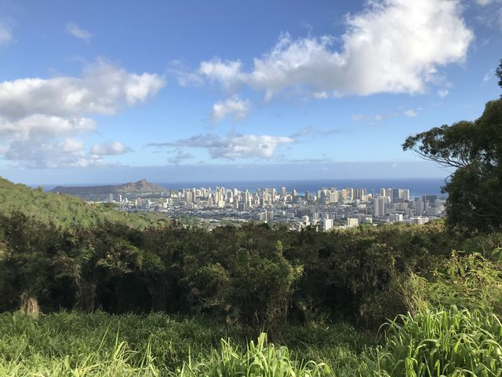
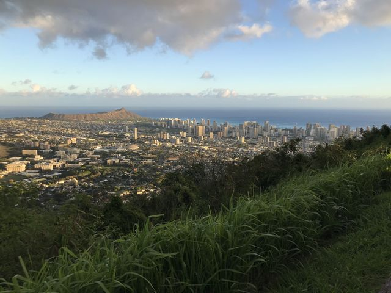
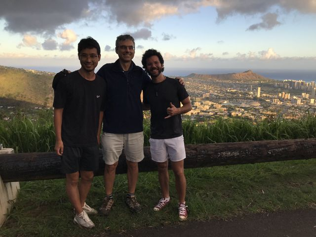
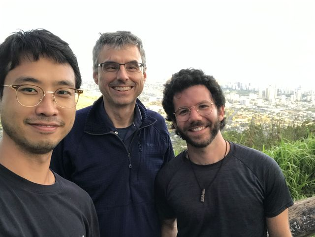

Skip to content
Helge Gonnermann
Volcanoes, Magmatic Processes, Fluid Flow
Menu
Home
Research
Publications
Lab
People
Field Trips
Opportunities
CV / Contact
← All field trips
Honolulu, July 2022
4 photos



With Jong Gil Park and Gaetano Ferrante above Honolulu, July 2022

With Jong Gil Park and Gaetano Ferrante above Honolulu, July 2022